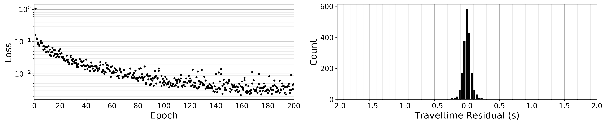
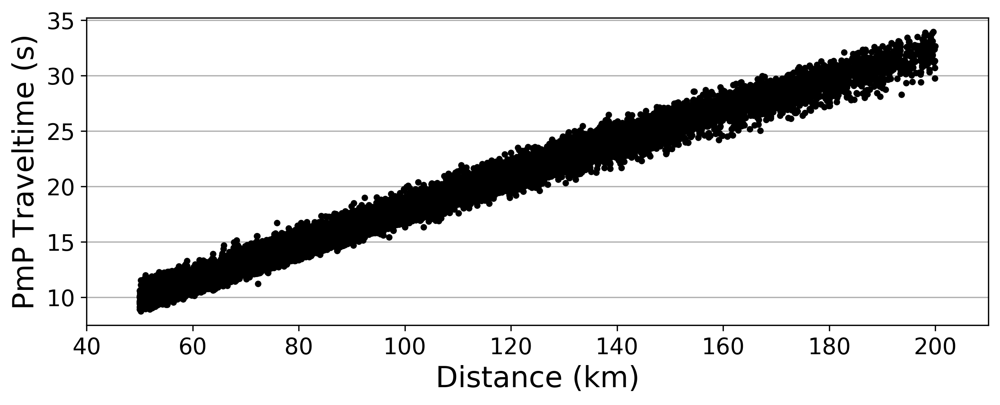

Use PmP-traveltime-Net to Predict PmP Traveltime
Device configuration, Hyper-parameters setting, paths setting for data and result folders:
import torch
import os
import PmP_traveltime_Net as PTN
# Device configuration
cuda = torch.cuda.is_available()
device = torch.device('cuda' if torch.cuda.is_available() else 'cpu')
# Hyper-parameters
batch_size = 128
num_epochs = 200
learning_rate = 5e-4
# Paths for different folders, data and result folders
datadir="/home/pmpboy/Github/Data"
wdir="/home/pmpboy/Github/Result/Train_PTN_result"
if not os.path.exists(wdir):
os.makedirs(wdir)
read in the training data:
train_loader, test_loader = PTN.readin_data_train(datadir,"TrainData_PmP_traveltime_Net",batch_size)
train PmP-traveltime-Net:
PTN.NetTrain(wdir,"train_PTN_log","net_PTN_model",train_loader,learning_rate,num_epochs,batch_size,device)
We will see such output during training PmP-traveltime-Net:
Epoch [1/200], Step [1/63], Loss: 1.060057
Epoch [1/200], Step [51/63], Loss: 0.161801
Epoch [2/200], Step [1/63], Loss: 0.125822
Epoch [2/200], Step [51/63], Loss: 0.120287
Epoch [3/200], Step [1/63], Loss: 0.093617
Epoch [3/200], Step [51/63], Loss: 0.084045
Epoch [4/200], Step [1/63], Loss: 0.073481
Epoch [4/200], Step [51/63], Loss: 0.077970
Epoch [5/200], Step [1/63], Loss: 0.104802
......
model evaluation on test data:
PTN.netevalu(wdir,"net_PTN_model","predict_PTN_file",test_loader,device)
quickly visualize the result:
PTN.plot_modeva(wdir,"train_PTN_log","predict_PTN_file","plot_PTN_modevalu")
{kind=link}

Apply the pre-trained PmP-traveltime-Net to a certain year data
read in the real data:
test_loader = PTN.readin_data_real(datadir,"ValidationData_2015",batch_size)
give PmP traveltime prediction on real data:
PTN.netpredict(datadir,"ValidationData_2015",wdir,"net_PTN_model","predict_PTN_file_2015",test_loader,device)
quickly visualize the result:
PTN.plot_predict(wdir,"predict_PTN_file_2015","plot_PTN_predict_2015")
{kind=link}
